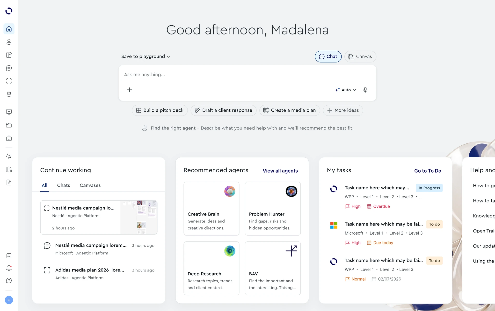
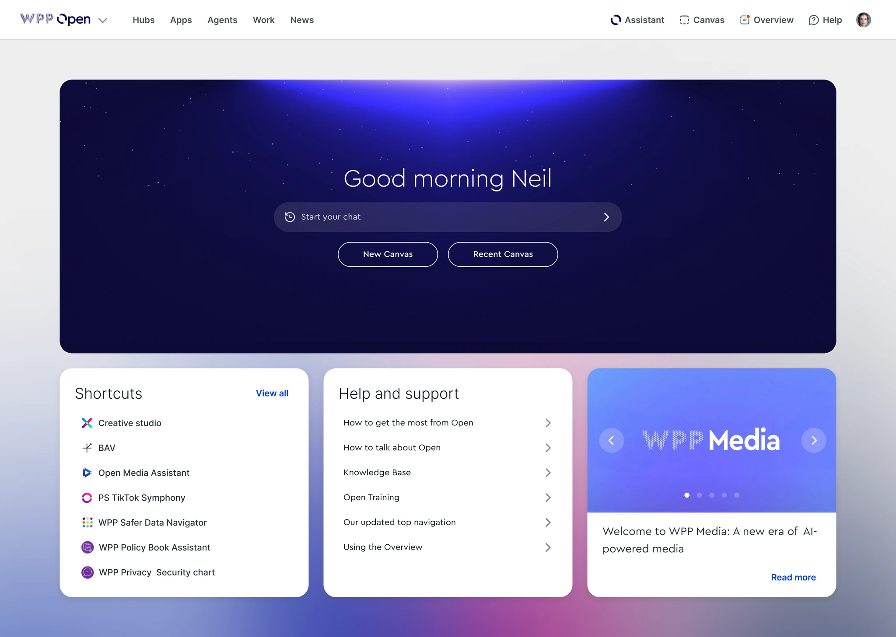
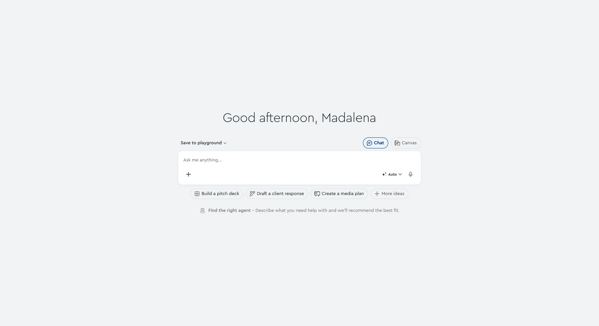
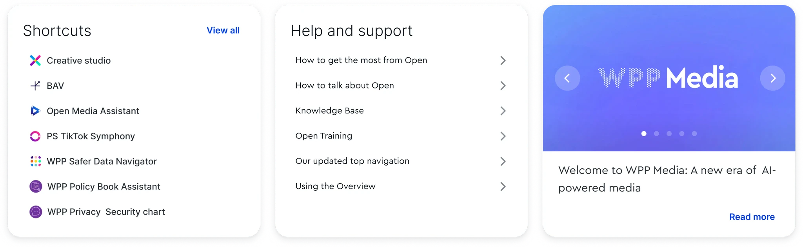
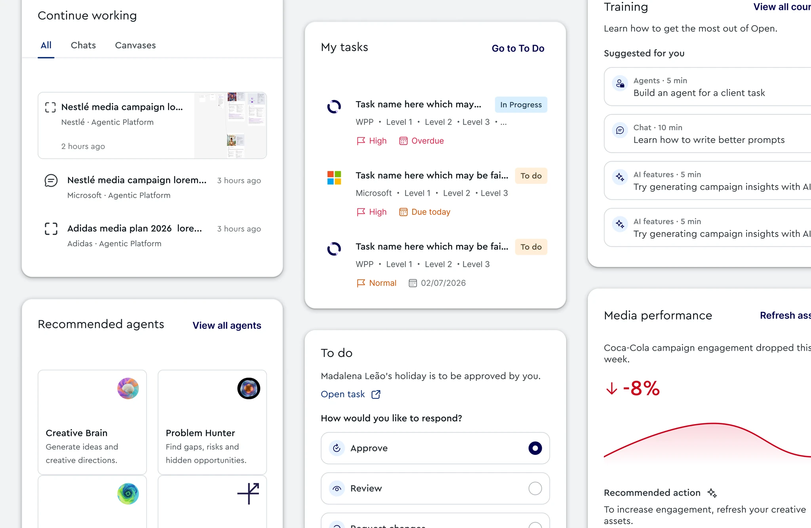

WPP OPEN
A homepage that
moves work forward.
I helped redesign the WPP Open homepage, translating research findings into a new composer, contextual cards and navigation. The redesign is now in development, with a focus on helping people resume work, discover relevant AI capabilities and understand where to begin.
Explore the thinking
- MY ROLE
- Product Designer
- TIMELINE
- Ongoing
- STATUS
- In development
- TOOLS
- Figma
- SECTOR
- Enterprise AI
- THE TEAM
- 2 PD · 4 FE · 4 BE · 1 PM · 2 QA
- RESEARCH COLLABORATION
- UX researcher
CONTEXT + PROBLEM
From entry points
to momentum.
People arrived with work already in progress. The homepage needed to meet them there.
WPP Open brings tools, data and AI agents together for marketing teams and clients, across strategy, campaign creation, content production and media planning.
As Chat, Canvas, Agents and workspaces came together, the homepage still acted mostly as a set of entry points. The opportunity was to support continuity: help people pick up relevant work, understand their context and find useful capabilities.
What deserves to be
on the homepage at all?

Access to the platform, with limited support for work already underway.
RESEARCH + REFRAME
Listen first.
Find the pattern.
Qualitative
interviews
Questionnaire
responses
Research collaboration
I worked with a UX researcher to prepare the interview questions and supporting materials. She conducted the eight qualitative interviews, and we discussed the findings together. I then translated the research into design changes, refining the card concepts and the wider homepage experience.
What informed the redesign
The research favoured cards that helped people progress, manage or resume work. To Do, Project Overview, Continue Where You Left Off and Recommended Agents emerged as stronger concepts than broader informational content.
The July research summary reported that 67% of respondents rated To Do as very or extremely important. Participants also questioned whether Urgent Tasks needed to be separate from To Do, highlighting an opportunity to reduce duplication.
Getting started was another challenge: 40% of survey respondents were unfamiliar with Canvas. Together with findings that some users mistook the Chat input for search, this pointed to a need for clearer guidance on what each mode could do.
The homepage should help people move existing work forward, as well as find where to begin.
Research synthesis developed jointly by the UX researcher and me.
Continuity
Make it easy to return to meaningful work.
Context
Keep the relevant client or project in view.
Discovery
Show useful AI capabilities and how to begin.
Role variance
Recognise that different people need different signals.
The question became: how can the homepage help people resume, act, discover and orient?
PRIORITISING THE EXPERIENCE
Three connected
design decisions.
I explored 12 contextual card concepts and refined them using research feedback. Together with the team, I weighed their relevance to users, overlap with other concepts and implementation complexity.
Continue Working, To Do and Recommended Agents were selected to move forward based on the research, team priorities and available development capacity. The selection balanced user value with what we could realistically deliver.
Some concepts were left outside the initial scope because their complexity exceeded the development capacity available. Others were combined to avoid duplication, including bringing urgency into the task experience rather than treating it as a standalone card.
These decisions shaped the cards alongside two connected areas of the redesign: how people begin a task and how they navigate the platform.
These comparisons show the previous experience and the redesign currently in development. The descriptions explain the design intent; improvements in usability and behaviour have not yet been validated.
The single-line field could read as search. Chat and Canvas offered little guidance on how to begin.

The redesigned composer makes Chat and Canvas explicit, with suggested prompts and a route to agent discovery. These elements are intended to help people recognise what they can do and choose how to begin.
Make the first move clearer.
The research showed that visibility alone was not enough: some users were unfamiliar with Canvas, while others did not see a clear reason to use it. I brought mode selection, suggested prompts and agent discovery into the starting point to offer more guidance before users begin a task.

Shortcuts, support and announcements provided destinations, but little help with current work.

Continue Working, To Do and Recommended Agents bring ongoing work, tasks and relevant capabilities into the homepage. These cards were selected through research feedback, team prioritisation and development feasibility.
The image shows a broader card exploration. Continue Working, To Do and Recommended Agents were selected to move forward; not every concept shown is a confirmed implementation commitment.
Give every card a job.
Participant feedback questioned whether Urgent Tasks needed to be separate from To Do. I used this finding to bring urgency into the task experience rather than introduce a standalone Urgent Tasks card.
The research also showed that relevance varied by role. Media Performance, for example, mattered strongly to media practitioners but less to other participants. This highlighted the limits of treating every card as equally useful to everyone.
DELIVERY STATUS + NEXT STEPS
In development.
Validation ahead.
The redesign is now in development. My contribution connected research findings with decisions across the composer, contextual cards and navigation, while working with the team to keep the initial scope achievable.
The work has established a design direction and implementation scope. Its impact on usability and day-to-day work remains to be validated.
Research translated into design
Interview and questionnaire findings informed the card selection and the guidance offered at the starting point.
A focused implementation scope
The team balanced user value with development capacity, combining overlapping concepts and leaving more complex ideas outside the initial scope.
Connected entry points and navigation
The composer, cards and sidebar were designed around starting tasks, returning to work and finding relevant capabilities.


ONE CASE STUDY. PART OF A BIGGER PICTURE.